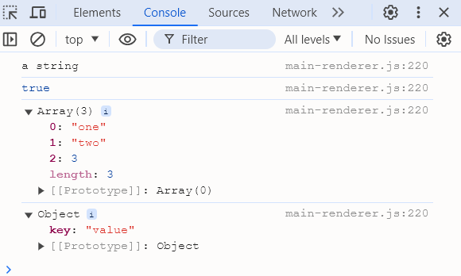
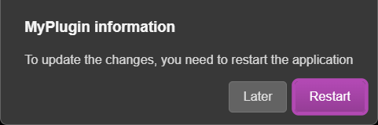

API Server
Config
Global object of the A.V.A.T.A.R server configuration.
Config.modules
Plugin configuration object. This object is generally used to retrieve a property key value.
{
"modules": {
"myFirstPlugin": {
"version": "1.0",
"name": "my first plugin",
"rules": {
"test": ["test * (command|order)"]
}
}
}
}
const name = Config.modules.myFirstPlugin.name;
// returns "my first plugin"
Message loggers
Logger methods are used to display messages in the A.V.A.T.A.R. console.
Possible data types for all loggers:
const str = 'a string';
const bool = true;
const arr = ['one', 'two', 3];
const obj = {key: "value"};
const f = () => console.log('hello');
Below, all methods to display information message in the console.
info(...message)
Displays an information message in white color.
info(str, bool, arr, obj, f);
// returns in the console:
// info: a string true ["one","two",3] {"key":"value"} () => console.log('hello')
infoGreen(...message)
Displays an information message in green color.
infoOrange(...message)
Displays an information message in orange color.
warn(...message)
Displays a warning message in orange color.
warn(str, bool, arr, obj, f);
// returns in the console:
// warn: a string true ["one","two",3] {"key":"value"} () => console.log('hello')
error(...message)
Displays an error message in red color.
error(str, bool, arr, obj, f);
// returns in the console:
// error: a string true ["one","two",3] {"key":"value"} () => console.log('hello')
infoConsole(...message)
Displays a message in the Chromium development console (displayed by clicking on the F11 key in the A.V.A.T.A.R. interface).
Warning
Due to Chromium's sandboxing, it is not possible to render a function in the development console.
Displaying a function will generate an error. All other data types are possible.
infoConsole(str, bool, arr, obj);

Dialog
Avatar.speak(tts, client[, end, callback, {voice, volume, speed, pitch}])
Executes a tts on the client's audio system (client's loudspeaker or other declared system).
| Parameter | Type |
Mandatory | Default value | Values | Description |
|---|---|---|---|---|---|
tts |
string object |
yes | The text or an array of texts to be vocalized. Can be a single text, several texts separated by a pipe ('|') or an array of texts (texts can be separated by a pipe ('|')). One of the values will be chosen at random | ||
client |
string | yes | Config.default.client | The client where the text is vocalized. Can be a real client or a virtual client, in which case the text will be vocalized on the real client linked to the virtual client | |
end |
boolean | no | true | true false |
Defines if the client's listening is restituted after speak true: restores listening false: does not restore listening |
callback |
function | no | Callback function executed after speak | ||
| {voice, volume, speed, pitch} | object voice: string volume: number speed: number pitch: number |
no | Defines the voice to be used. This voice must exist. the voice, volume, speed, pitch keys are not mandatory. number values depend on platform and voice |
Examples :
- Vocalizes the tts on the Living Room client and restores listening
Avatar.speak('Hello, what can i do for you?', 'Living room') - Vocalizes one of the tts randomly on the Living room client and restores listening
Avatar.speak('Hello, what can i do for you?|Hi, can I help you?', 'Living room') - Vocalizes one of the tts randomly on the Living room client and does not restore listening
Avatar.speak('Hello, what can i do for you?|Hi, can I help you?', 'Living room', false) - Vocalizes the tts on the Living room client, restores listening and executes a callback
Avatar.speak(['Hello, what can i do for you?', 'Hi, can I help you?'], 'Living room', () => { // Do stuff }) - Vocalizes the tts on the Living room client, does not restore listening and executes a callback
Avatar.speak('Hello, what can i do for you?', 'Living room', false, () => { // Do stuff }) - Vocalizes one of the tts randomly on the Living room client, does not restore listening and executes a callback
Avatar.speak(['Hello, what can i do for you?|Hi, can I help you?', 'I\'m home. Can I get you anything?'], 'Living room', false, () => { // Do stuff }) - Vocalizes the tts on the Living room client with a specific voice definition and restores listening
// definition: voice name, volume, speed, pitch Avatar.speak('Hello, what can i do for you?', 'Living room', {voice: "Microsoft Julie - French (France)", volume: 100, speed: 80, pitch: 1}) //Another definition: voice name and speed Avatar.speak('Hello, what can i do for you?', 'Living room', {voice: "Microsoft Julie - French (France)", speed: 70})
Avatar.askme(tts, client, grammar, timeout, callback[, rawSentence, {voice, volume, speed, pitch}])
Executes a tts on the client's audio system (client's loudspeaker or other declared system), waits for a response defined in the grammar object, then returns the result in the callback.
Note
To improve the results of askme responses, a search for the nearest grammar is performed using a levenshtein distance. This search is only performed for French and English languages.
| Parameters | Type |
Mandatory | Default value | Description |
|---|---|---|---|---|
tts |
string object |
no | The text or an array of texts to be vocalized. Can be a single text, several texts separated by a pipe ('|') or an array of texts (texts can be separated by a pipe ('|')). One of the values will be chosen at random | |
client |
string | yes | Config.default.client | The client where the text is vocalized. Can be a real client or a virtual client, in which case the text will be vocalized on the real client linked to the virtual client |
grammar |
object | yes | Grammar of possible answers in the form <grammar>:<execution tag> | |
timeout |
number | yes | 20 | Response waiting time in seconds |
callback |
function | yes | Callback function executed for askme | |
rawSentence |
string | no | Special case: mandatory if the client is a mobile type (eg. Android). |
|
| {voice, volume, speed, pitch} | object voice: string volume: number speed: number pitch: number |
no | Defines the voice to be used. This voice must exist. the voice, volume, speed, pitch keys are not mandatory. number values depend on platform and voice |
Examples :
- Simple askme, action to be performed with a fixed grammar
Avatar.askme("Hello, what is your name ?", client, { "paul": "doStuffForPaul", "john": "doStuffForJohn", "finish": "done" }, 15, (answer, end) => { // Removes the askme and restores listening end(client); // Fixed Grammar switch(answer) { case "doStuffForPaul": // do stuff for Paul break; case "doStuffForJohn": // do stuff for John break; case "done": // "finish" rule. Ending the askme without execution default: // timeout reached without answer Avatar.speak("nothing to do", client); } }) -
Generic askme, action to be executed with a fixed generic grammar
askme accepts a generic grammar rule ('*') and returns the answer as "generic:<answer>"
This generic grammar rule can be used with strict grammar rules.3. Askme without tts, for example an application (eg. Google Assistant) that speaks the question itself and waits for an answerAvatar.askme("Hello, what is your name ?", client, { "*": "generic", "finish": "done" }, 15, (answer, end) => { // Removes the askme and restores listening end(client); // tests the generic grammar if (answer.split(':')[1]) return Avatar.speak(`Welcome ${answer.split(':')[1]}`, client); // Otherwise, fixed Grammar switch(answer) { case "done": // "finish" rule. Ending the askme without execution default: // timeout reached without answer Avatar.speak("nothing to do", client); } })Avatar.askme(null, client, { "*": "generic", "finish": "done" }, 15, (answer, end) => { // Removes the askme and restores listening end(client); // tests the generic grammar if (answer.split(':')[1]) { // do stuff return answerForApp(answer.split(':')[1]); } // Otherwise, fixed Grammar switch(answer) { case "done": // "finish" rule. Ending the askme without execution default: // timeout reached without answer Avatar.speak("nothing to do", client); } })
Avatar.Speech.end(client[, activateListen, callback])
Restores listening to the client.
Parameter |
Type | Mandatory | Default value | Values | Description |
|---|---|---|---|---|---|
client |
string | yes | Config.default.client | The client where the listening restoration is to be performed. This can be a real client or a virtual client | |
activateListen |
boolean | no | true | true false |
Defines if the listening restoration must be performed In all cases, the unmute method is executed |
callback |
function | no | Callback function executed after listening restoration has been executed. If the timeoutCallbackEnd method of the relevant plugin exists, a timeout for executing the callback can be defined |
Examples:
-
Restores listening
// Restores listening Avatar.Speech.end('Living room'); -
tts on the client without listening restoration (end = false) then, after executing an action in the callback, restores listening
Avatar.speak('Hello, what can i do for you?', 'Living room', false, () => { // Do Stuff // ....... // Restores listening Avatar.Speech.end('Living room'); }) - Five seconds timeout for callback end
/** * Returns a timeout for the callback of the Avatar.Speech.end method * @param {string=} client - the A.V.A.T.A.R client where the end method is executed, can be a real or virtual client * @return {number=} - required - returns timeout in milliseconds */ export function timeoutCallbackEnd(client) { // wait for 5 seconds to execute the callback return 5000; } const test = () => { // tts on Living room, no reactivation of listening Avatar.speak('Hello, what can i do for you?', 'Living room', false, () => { // Do stuff // ........ // Then, restores listening and a callback executed with a timeout of 5 seconds Avatar.Speech.end('Living room', () => { // Do stuff // ........ }) }) }
Music play
Avatar.play(music, client, type[, end, callback])
Plays a sound file on the client.
Parameter |
Type | Mandatory | Default value | Values | Description |
|---|---|---|---|---|---|
music |
string | yes | The sound file to be played. Can be: - A file on the server or on a client - A local or remote web address. __dirname is replaced by <A.V.A.T.A.R>/resources/app/core |
||
client |
string | yes | Config.default.client | The client where the sound file is to be played | |
type |
string | yes | local url |
- local: File on client or server - url: Local or remote http link |
|
end |
string | no | after | before after |
Defines whether the listening restoration on the client is performed before or after the sound file is played |
callback |
function | no | Callback function executed after playing the sound file |
Examples:
- Absolute path on the client, reactivates listening before playing, no callback
Avatar.play('C:/music/siren.mp3', 'Living room', 'local', 'before'); - <A.V.A.T.A.R>/resources/app/core path on the client, reactivates listening after playing and a callback
Avatar.play('__dirname/music/siren.mp3', 'Living room', 'local', 'after', () => { // Do stuff }); - Music on the web, reactivates listening after playing and a callback
Avatar.play("https://ccrma.stanford.edu/~jos/mp3/cello.mp3", 'Living room', 'url', 'after', () => { // Do stuff }); - HTTP static folder on the server (music file on the server), reactivates listening after playing
const music = `http://${Config.http.ip}:${Config.http.port}/Love_Is_a_Battlefield.mp3`; // sets static folder on the server Avatar.static.set('C:/music', () => { // Plays music on the client Avatar.play(music, 'Living room', 'url'); }); - HTTP static folder on a client (music file on the client), reactivates listening before playing
const clientInfos = Avatar.Socket.getClient('Living room'); const music = `http://${clientInfos.ip}:${clientInfos.loopback}/Love_Is_a_Battlefield.mp3`; // sets static folder on the client Avatar.static.setToClient('C:/music', 'Living room', () => { // Plays music on the client Avatar.play(music, 'Living room', 'url', 'before'); });
Avatar.stop(client[, callback])
Stops sound file playback on the client.
Parameter |
Type | Mandatory | Default value | Description |
|---|---|---|---|---|
client |
string | yes | Config.default.client | The client where playback must be stopped |
callback |
function | no | Callback function executed after playback stop |
Example :
Avatar.stop('Living room');
Files & folders
Avatar.copyFile(from, to, client[, end, backup, callback])
Copies a file from the server to a client.
Parameter |
Type | Mandatory | Default value | Values | Description |
|---|---|---|---|---|---|
from |
string | yes | Name of the server source file to be copied to the client | ||
to |
string | yes | Name of destination file on client. __dirname is replaced by <A.V.A.T.A.R>/resources/app/core |
||
client |
string | yes | Config.default.client | The client where the file is copied | |
end |
string | no | before after |
Defines whether playback on the client is performed before or after copying the file | |
backup |
boolean | no | false | true false |
Defines whether a copy in _old is made if the destination file exists |
callback |
function | no | Callback function executed after copying |
Examples:
// Absolute server and client paths, activate listening before copy of the file
Avatar.copyFile('C:/avatar-server/tmp/myfile.js', 'C:/tmp/myfile.js', 'Living room', 'before', () => {
// Do stuff
})
// <A.V.A.T.A.R\>resources/app/core path on the client and backup of the file if exists
Avatar.copyFile('C:/tmp/avatar.js', '__dirname/avatar.js', 'Living room', true);
Avatar.transfertPlugin(plugin, client[, backup, callback])
Copies a plugin folder from the server to a client.
Parameter |
Type | Mandatory | Default value | Values | Description |
|---|---|---|---|---|---|
plugin |
string | yes | Name of the server plugin to be transferred to the client | ||
client |
string | yes | Config.default.client | The client to which the plugin directory is transferred | |
backup |
boolean | no | false | true false |
Defines whether a backup copy in the <Client>/app/resources/core/backup-plugins directory is made if the plugin exists on the client |
callback |
function | no | Callback function executed after transfer |
Example:
// Copys the weather plugin to the `Living room` client with a backup before the copy
Avatar.transfertPlugin('weather, 'Living room', true, () => {
// Do stuff
})
Avatar.static.set(folder[,callback])
Defines a static folder on the server.
Parameter |
Type | Mandatory | Description |
|---|---|---|---|
folder |
string | yes | Folder to be set static |
callback |
function | no | Callback function |
Example:
// sets static folder on the server
Avatar.static.set('C:/music', () => {
// Do stuff
});
Avatar.static.setToClient(folder, client[,callback])
Defines a static folder on a client.
Parameter |
Type | Mandatory | Description |
|---|---|---|---|
folder |
string | yes | Folder to be returned static |
client |
string | yes | The customer where the folder is to be returned static |
callback |
function | no | Callback function |
Example:
// sets static folder on the client
Avatar.static.setToClient('C:/music', 'Living room', () => {
// Do stuff
});
Client methods
Avatar.clientFromRule(sentence)
sentence<string> A sentence (can be not translated in English)- Returns: <string> A client included in the sentence, can be a virtual client
Examples:
- Real client: 'Living room'
- Virtual client: 'Patio'
const room = Avatar.clientFromRule('switch on the light in the Living room');
// Returns: 'Living room'
const room = Avatar.clientFromRule('allume la lumière dans le Patio');
// Returns: 'Patio'
Avatar.clientPlugin(client, plugin[, param, callback])
Runs a plugin on the client.
Parameter |
Type | Mandatory | Default value | Description |
|---|---|---|---|---|
client |
string | yes | Config.default.client | The client where the plugin runs |
plugin |
string | yes | Plugin to run | |
param |
objet | no | data object parameters sent to the plugin | |
callback |
function | no | Callback function executed after plugin execution |
Examples:
- Exécute le plugin
timeAvatar.clientPlugin('Living room', 'time'); - Autre exécution du plugin
timeavec callbackAvatar.clientPlugin('Living room', "time", () => { // Do stuff }); - Exécute le plugin
eeDomusavec des paramètresAvatar.clientPlugin('Living room', 'eeDomus', {action: {command: 'set', periph: '568947', value: '1OO'}});
Avatar.getTrueClient(client)
client<string> A virtual client- Returns: <string> The real client
Returns the real client of a virtual client.
Examples:
- Virtual client: 'Patio'
- Real client: 'Living room'
const client = Avatar.getTrueClient('Patio');
// Returns: 'Living room'
const client = Avatar.getTrueClient('Living room');
// Returns: 'Living room'
Avatar.getVirtualClients(client)
client<string> A real client- Returns: <array>[ ] Virtual clients
Example:
- Real client: 'Living room'
- Virtual client: 'Patio'
- Virtual client: 'kitchen'
const virtualClients = Avatar.getVirtualClients('Living room');
// Returns: ['Patio', 'Kitchen']
const virtualClients = Avatar.getVirtualClients('Patio');
// Returns: []
Avatar.isMobile(client)
client<string> A client- Returns: <boolean> true if the client is mobile (eg. Android) or false
const properties = Avatar.isMobile('Android');
// Returns: true
Avatar.isVirtualClient(client)
client<string> A client- Returns: <boolean> true if the client is virtual or false
Examples:
- Real client: 'Living room'
- Virtual client: 'Patio'
const isVirtual = Avatar.isVirtualClient('Living room');
// Returns: false
const isVirtual = Avatar.isVirtualClient('Patio');
// Returns: true
Avatar.runApp(appExe, client[, param, callback])
Runs an application on a client.
Parameter |
Type | Mandatory | Default value | Description |
|---|---|---|---|---|
appExe |
string | yes | Application to run __dirname is replaced by <A.V.A.T.A.R>/resources/app/core |
|
client |
string | yes | Config.default.client | The client where the application runs |
param |
string | no | Parameters of the application to be run | |
callback |
function | no | Callback function executed after application execution |
Examples:
-
Executes the
screensaverapplication depending of the plateform (Windows, Linux, Darwin)const screensaver = process.platform === 'win32' ? path.join("lib", "screensaver", "win32", "screensaver.bat") : path.join("lib", "screensaver", process.platform, "screensaver.sh"); Avatar.runApp('__dirname/'+screensaver, 'Living room'); -
Executes nircmd application on Windows platform only with parameters and callback
Avatar.runApp('C:/apps/nircmd/nircmd', 'Living room', 'win close class "IEFrame"',() => { // Do stuff });
Avatar.isServerSpeak(client)
Test whether dialogs are redirected to speakers other than the client PC.
Returns <boolean> true or false
// 'Living room' has wifi speakers
const serverSpeak = Avatar.isServerSpeak('Living room');
// Returns: true
Avatar.isMobile(client)
Test if the client is a mobile client (eg. Android)
Returns <boolean> true or false
const mobile = Avatar.isMobile('Android');
// Returns: false
Avatar.isLoopMode(client)
Test if client is configured in loop mode
Returns <boolean> true or false
const mobile = Avatar.isLoopMode('Living room');
// Returns: false
Avatar.Socket.getClients()
- Returns: <array> All connected clients
Example:
const clients = Avatar.Socket.getClients();
// Returns: <array\>[ ]</span> All connected clients
// [
// Client {
// id: 'Living_room', // ID of the client
// name: 'Living room', // name of the client
// Obj: Socket {...}, // client socket
// loop_mode: false, // dialog loops after each dialog
// server_speak: false, // dialogs are redirected to other speakers
// ip: '191.89.2.120', // client IP adress
// loopback: '', // client remote http port
// language: 'en-EN', // language of the client dialogs
// is_mobile: false // the client is mobile or not
// }
// ]
Avatar.Socket.getClientSocket(client)
client<string> A connected client- Returns: <object> Socket object of the connected client
Example:
const clientSocket = Avatar.Socket.getClientSocket('Living room');
// Returns:
// <ref *1> Socket {....}
Note
The returned object is used to emit an event on a client via clientSocket.emit(event).
<clientSocket>.emit(event)
event<string> Emits event to the client
Possible events:
| Event | Parameter | Description |
|---|---|---|
| restart | Restarts the client | |
| quit | Closes the client | |
| shutdown | Stops the client server | |
| start_listen | Triggers listening on the client | |
| stop_listen | (client, full) | Stop listening of the clientclient <string> Client namefull <boolean> - true: Restores listening - false: Does not restore listeningIn all cases, the unmute method of the relevant plugin is executed. |
| listenOnOff | (state) | Enables/disables client listeningstate <boolean>- true: Enables listening - false: disables listening |
-
Restarts the server of the client
const clientSocket = Avatar.Socket.getClientSocket('Living room'); clientSocket.emit('restart'); -
Stops listening of the client
const clientSocket = Avatar.Socket.getClientSocket('Living room'); clientSocket.emit('stop_listen', 'Living room', true);
Plugin methods
Avatar.getProperty(file[, property])
Returns the properties of the JSON file or the value of property.
Parameter |
Type | Mandatory | Description |
|---|---|---|---|
file |
string | yes | The properties file in json format |
property |
string | no | Property name |
Examples:
const properties = Avatar.getProperty('/folder/myProperties.prop');
// Returns:
// {
// "myProperties":"This is my JSON file",
// "values":100,
// "description":"My first plugin"
// }
const property = Avatar.getProperty('/folder/myProperties.prop', 'description');
// Returns: 'My first plugin'
Avatar.trigger(listener[, options])
Triggers a listener module.
Paramter |
Type | Mandatory | Description |
|---|---|---|---|
listener |
string | yes | Listener module to be triggered |
options |
object | no | Parameters for the listener module |
Examples:
-
Simple trigger with parameters
Avatar.trigger('eeDomus', {key: 'SwitchLight', client: 'Living room', periph:'135968', state: "100" }); -
Trigger with callback function
Avatar.trigger('eeDomus', { key: 'switchLight', client: 'Living room', periph:'135968', state: "100", callback: function (state) => { // Do stuff });
Avatar.listen(listener[, callback(options)])
Declaration of a listener module.
Parameter |
Type | Mandatory | Description |
|---|---|---|---|
listener |
string | yes | Listener name |
callback |
function | no | Function to be executed with options passed to the trigger |
Examples:
-
Simple listener with parameters
Avatar.listen('eeDomus', async data => { // Executes the action await set(data); }); -
Listener with callback function
Avatar.listen('eeDomus', async data => { // Executes the action await set(data); if (data.callback) callback(); });
Avatar.call(plugin[, options, callback])
Calls a plugin to be executed.
Parameter |
Type | Mandatory | Description |
|---|---|---|---|
plugin |
string | yes | Plugin name |
options |
object | no | Options to be passed to the plugin |
callback |
function | no | Function to be executed after plugin call. Note: The plugin can pass a parameter in the callback function of its action method. |
Examples:
-
Executes 'time' plugin, no options required
Avatar.call('time'); -
Executes 'time' plugin with options and callback
Avatar.call('time', {action: {command: 'set'}, language: 'en', client: 'Living room'}, () => { //Do stuff }); -
Executes 'time' plugin with callback
// data <value> - if the plugin returns a value in its callback Avatar.call('time', (data) => { //Do stuff });
Avatar.run(plugin[, options, callback])
Same to Avatar.call() but is executed for a plugin call by an HTTP request unlike Avatar.call()
Action |
Avatar.call() | Avatar.run() |
|---|---|---|
Requète HTTP |
||
Appel par plugin |
Parameter |
Type | Mandatory | Description |
|---|---|---|---|
plugin |
string | yes | Plugin name |
options |
object | no | Options to be passed to the plugin |
callback |
function | no | Function to be executed after plugin call. Note: The plugin can pass a parameter in the callback function of its action method. |
Examples:
-
Executes 'time' plugin, no options required
Avatar.run('time'); -
Executes 'time' plugin with options and callback
Avatar.run('time', {action: {command: 'set'}, language: 'en', client: 'Living room'}, () => { //Do stuff }); -
Executes 'time' plugin with callback
// data <value> - if the plugin returns a value in its callback Avatar.run('time', (data) => { //Do stuff });
Avatar.last(client)
Returns the last action performed for the client.
const lastAction = Avatar.last('Living room');
// Returns:
// [{
// client: 'Living room',
// plugin: 'sonosPlayer',
// options: {
// rawSentence: 'test musique',
// client: 'Living room',
// language: 'fr',
// sentence: 'Music test',
// tags: [Array],
// tokens: [Array],
// relations: [Object],
// action: [Object],
// toClient: 'Living room',
// rule: 'test'
// },
// callback: false
// }]
Avatar.exists(plugin)
Test if the plugin exists.
plugin<string> Le nom d'un plugin- Returns:
- true: The plugin exists
- false: The plugin doesn't exist
const isExist = Avatar.exists('time');
// Returns: true
Avatar.ia.action(sentence, client, language[, callback])
Triggers the Natural Language Processing of the sentence then executes the associated plugin.
Parameter |
Type | Mandatory | Description |
|---|---|---|---|
sentence |
string | yes | Sentence to be processed by NLP |
client |
string | yes | The client where the action is executed |
language |
string | yes | The short code of the language used on the client |
callback |
function | no | Function to be executed after plugin call |
Examples:
-
NLP sentence processing then execution of the associated plugin
Avatar.ia.action('what time is it?', 'Living room', 'en'); -
NLP sentence processing, execution of the associated plugin then executes a callback
Avatar.ia.action('quelle heure est il ?', 'Living room', 'fr', () => { // Do stuff });
Language pack
Language packs allow you to localize the plugin's messages.
Language packs must be created in the plugin's locales directory and be in the form <country shortcode>.pak.
Tip
Plugin creation by Wigdet Studio automatically drops in a <lang>.pak file in the current language.
Avatar.lang.addPluginPak(plugin)
plugin<string> Plugin name
Adds plugin language files to the internal language pack library.
Tip
Add the language packs to the plugin's init() method to only have to do it once.
Example:
export async function init () {
// Add plugin language packs to the language pack library
await Avatar.lang.addPluginPak('myPlugin');
}
Avatar.lang.getPak(plugin, lang)
Returns the language pack.
Parameter |
Type | Mandatory | Description |
|---|---|---|---|
plugin |
string | yes | Plugin name |
lang |
string | yes | The language pack we're looking for |
Note
As the application is multiroom and each client can have its own dialog language, it's best to look for the language pack in the plugin's action() method.
Example:
// global internal variable
let Locale;
export async function action (data, callback) {
// searchs for lang pack for the current language
Locale = await Avatar.lang.getPak('myPlugin', data.language);
// .....
}
<lang pak\>.get(key)
Retrieves the value of the key in the language pack loaded in the Locale variable (see Avatar.lang.getPak())
key: <string> ou <array>[ ] The key to retrieve
Note
The $$ are replaced in the key value in the order of their positions in the array (see examples below).
Examples:
{
"error": {
"decrypt": "Unable to decrypt the API password of the myPlugin plugin",
"init": "Error in the init module of the myPlugin plugin"
},
"speech": {
"answerSet": "right now|it's done|magic",
"answerGet": "the temperature is $$ degrees in the $$"
}
}
{
"error": {
"decrypt": "Impossible de décrypter le mot de passe de l'API du plugin myPlugin",
"init": "Erreur dans le module init du plugin myPlugin"
},
"speech": {
"answerSet": "voilà|c'est fait|magique",
"answerGet": "il fait $$ degrés dans la pièce $$"
}
}
-
myVar is empty, write error message
if (!myVar) { return error(Locale.get('error.decrypt')); } -
Set an action then speak a random confirmation message (string)
set(() => { // Do stuff Avatar.speak(Locale.get('speech.answerSet'), 'Living room'); }) -
Get a value then speak a message (array[ ])
// The $$ in the value of the key is replaced by the dynamic values in the sentence order // First $$ in the message = value // Second $$ in the message = client get((value, client) => { Avatar.speak(Locale.get(["speech.answerGet", value, client]), client); })
Avatar.lang..getLanguagePak(Plugin, lang)
Returns the plugin's language pack for the specified language.
Plugin: <string> Plugin namelang: <string> Short code for the language of the pack to be returned- Returns: <object>[ ] The language pack
// Get the plugin language pack for the 'fr' language
const langpak = await Avatar.lang.getLanguagePak('myPlugin', 'fr');
Returns:
// {
// "error": {
// "decrypt": "Impossible de décrypter le mot de passe de l'API du plugin myPlugin",
// "init": "Erreur dans le module init du plugin myPlugin"
// },
// "speech": {
// "answerSet": "voilà|c'est fait|magique",
// "answerGet": "il fait $$ degrés dans la pièce $$"
// }
// }
Avatar.lang..getPaksByPlugin(Plugin)
Returns the plugin's language packs.
Plugin: <string> Plugin name- Returns: <array>[ ] Array of plugin language packs
// Get all plugin language packs
const packs = await Avatar.lang.getPaksByPlugin('myPlugin');
//Returns:
// [
// PluginLanguage {
// get: [Function: get],
// plugin: 'myPlugin',
// locale: 'en',
// pak: { error: [Object], speech: [Object] }
// },
// PluginLanguage {
// get: [Function: get],
// plugin: 'myPlugin',
// locale: 'fr',
// pak: { error: [Object], speech: [Object] }
// }
// ]
Encrypt/decrypt a value
These functions add extra protection to data stored on disk, using the cryptography provided by the operating system. Current security semantics for each platform are described below.
| Platform | Encryption | Tested? |
|---|---|---|
| Windows | DPAPI | |
| Linux | Varies with system: kwallet, kwallet5, kwallet6 and gnome-libsecret Some systems such as Debian or Ubuntu have encryption installed by default, otherwise you will need to manually install an encryption option |
Debian12 : |
| MacOS | Keychain Access |
Note
Use the decryption method Avatar.decrypt() to decrypt the string before using it.
Avatar.encrypt(value)
value<string> A value to encrypt- Returns: <array>[ ] A encrypted array of values or false
Examples:
const encryptedValue = Avatar.encrypt('ipOhjugf11548OPpze');
// Returns:
// [
// 118, 49, 48, 107, 188, 207, 26, 235, 24, 7,
// 75, 124, 162, 192, 141, 39, 182, 231, 71, 130,
// 123, 116, 190, 39, 220, 97, 61, 95, 13, 6,
// 90, 18, 13, 160, 250, 109, 143, 77, 7, 232,
// 244, 127, 133, 132, 116, 68, 96, 35, 144
// ]
// Test on a platform without encryption
const encryptedValue = Avatar.encrypt('ipOhjugf11548OPpze');
// Returns: false
Avatar.decrypt(value)
value<string> or <array>[ ] A string value or array of values to decrypt- Returns: <string A decrypted value or false
Examples:
-
Decryption of string
const decryptedValue = Avatar.decrypt('118, 49, 48, 107, 188, 207, 26, 235, 24, 75, 124, 162, 192, 141, 39, 182, 231, 71, 130, 123, 116, 190, 39, 220, 97, 61, 95, 13, 6, 90, 18, 13, 160, 250, 109, 143, 77, 7, 232, 244, 127, 133, 132, 116, 68, 96, 35, 144'); // Returns: 'ipOhjugf11548OPpze' -
Decryption of array
const decryptedValue = Avatar.decrypt([118, 49, 48, 107, 188, 207, 26, 235, 24, 75, 124, 162, 192, 141, 39, 182, 231, 71, 130, 123, 116, 190, 39, 220, 97, 61, 95, 13, 6, 90, 18, 13, 160, 250, 109, 143, 77, 7, 232, 244, 127, 133, 132, 116, 68, 96, 35, 144]); // Returns: 'ipOhjugf11548OPpze' -
Test on a platform without decryption
const encryptedValue = Avatar.decrypt('118, 49, 48, 107, 188, 207, 26, 235, 24, 75, 124, 1...'); // Returns: false
HTTP request
Plugin access via HTTP request.
Format: http://<IP address>:<Port>/avatar/<Plugin>?key=value&key=value
| Parameter | Mandatory | Description |
|---|---|---|
| IP address | yes | A.V.A.T.A.R. server IP address |
| Port | yes | A.V.A.T.A.R. server communication port |
| Plugin | yes | The name of the plugin to run |
| key=value | no | The parameters of the data object to be passed to the plugin's action method If a parameter key is equal to command then the data object will be {action: {command: value, key: value} sinon {key: value} |
Examples:
// Serveur IP address: 192.168.2.34
// Port: 3000
// Plugin: myPlugin
// keys: command=updateInfo&id=225665
// Object data received in the plugin: {action: {command: updateInfo, id: 225665}}
try {
const response = await axios (url: 'http://192.168.2.34:3000/avatar/myPlugin?command=updateInfo&id=225665');
if (response.status !== 200) {
throw new Error ('status '+response.status);
}
} catch (err) {
error ('HTTP error:', err);
}
// Serveur IP address: 192.168.2.34
// Port: 3000
// Plugin: myPlugin
// keys: id=225665
// Object data received in the plugin: {id: 225665}
try {
const response = await axios ('http://192.168.2.34:3000/avatar/myPlugin?id=225665');
if (response.status !== 200) {
throw new Error ('status '+response.status);
}
} catch (err) {
error ('HTTP error:', err);
}
Interface
Avatar.Interface.mainWindow()
Returns the BrowserWindow instance of A.V.A.T.A.R.'s main window.
Example:
const mainWindow = Avatar.Interface.mainWindow();
Avatar.Interface.BrowserWindow(options, html[, isMenu])
Creates a new BrowserWindow with the native properties defined by the options.
- Returns: <string The instance of the window
Parameter |
Type | Mandatory | Values | Default values | Description |
|---|---|---|---|---|---|
options |
object | yes | Window creation options | ||
html |
string | yes | The html file for the window's process renderer | ||
isMenu |
boolean | no | true false |
false | Defines whether the window retains its default menu |
Note
See BrowserWindow in the Electron documentation for more information on creation options.
For more information, see the example of creating a window for the weather forecast plugin.
Example:
// Style of the window
const style = {
parent: Avatar.Interface.mainWindow(),
frame: false,
movable: true,
resizable: true,
minimizable: false,
alwaysOnTop: false,
show: false,
width: 320,
height: 150,
opacity : 1,
icon: path.resolve(__dirname, 'assets', 'images', 'weather.png'),
webPreferences: {
preload: path.resolve(__dirname, 'weather-preload.js')
},
title: "Weather forecast"
}
// Creates a new window with the style, the 'weather.html' file and no menu
const WeatherWindow = await Avatar.Interface.BrowserWindow(style, path.resolve(__dirname, 'weather.html'), false);
Avatar.Interface.ipcMain()
Allows asynchronous communication from the main process with rendering processes.
Returns A.V.A.T.A.R.'s ipcMain module.
Note
See ipcMain in the Electron documentation for more information on listening methods.
For more information, see the example of creating a window for the weather forecast plugin.
Exemple:
const ipcMain = Avatar.Interface.ipcMain();
Avatar.Interface.Menu()
Returns Menu module.
const template = [
{
label: "Edit",
icon: path.resolve(__dirname, 'assets/images/edit.png'),
click: () => edit()
},
{type: 'separator'},
{
label: "View",
icon: path.resolve(__dirname, 'assets/images/view.png'),
click: () => view()
},
];
const menu = Avatar.Interface.Menu();
// Buids menu
const myMenu = menu.buildFromTemplate(template);
// Displays menu
myMenu.popup({window: myWindow});
Avatar.Interface.dialog()
Returns dialog module.
const options = {
type: 'question',
title: "My message",
message: "Are you sure ?",
detail: "Answer Yes or No !",
buttons: ["Yes i do !", "I don't know !"]
};
const answer = Avatar.Interface.dialog().showMessageBoxSync(myParentWindow, options);
switch (answer) {
case 0:
info('You said Yes !');
break;
case 1:
info('You said Maybe !');
}
Avatar.Interface.shell()
Returns shell module.
-
Opens the site in the default internet browser
Avatar.Interface.shell().openExternal('https://google.com'); -
Moves the item to the trash
Avatar.Interface.shell().trashItem(path.resolve(__dirname, 'myfile'));
Avatar.Interface.globalShortcut()
Returns globalShortcut module.
// Registers the F2 key to do a stuff
Avatar.Interface.globalShortcut().register('F2', () => {
// Do stuff
})
Note
Global shortcuts are automatically deleted by A.V.A.T.A.R. when you quit the application.
Warning: The F11 shortcut is used by A.V.A.T.A.R server and the F10 shortcut is used by A.V.A.T.A.R clients to open the Chromium window console.
Avatar.Interface.showRestartBox(msg)
Displays a restart dialog box in the A.V.A.T.A.R. interface.
msg: <object> {title, detail} Dialog box information messages
Example :
Avatar.Interface.showRestartBox({title: "MyPlugin information", detail: "To update the changes, you need to restart the application"});
